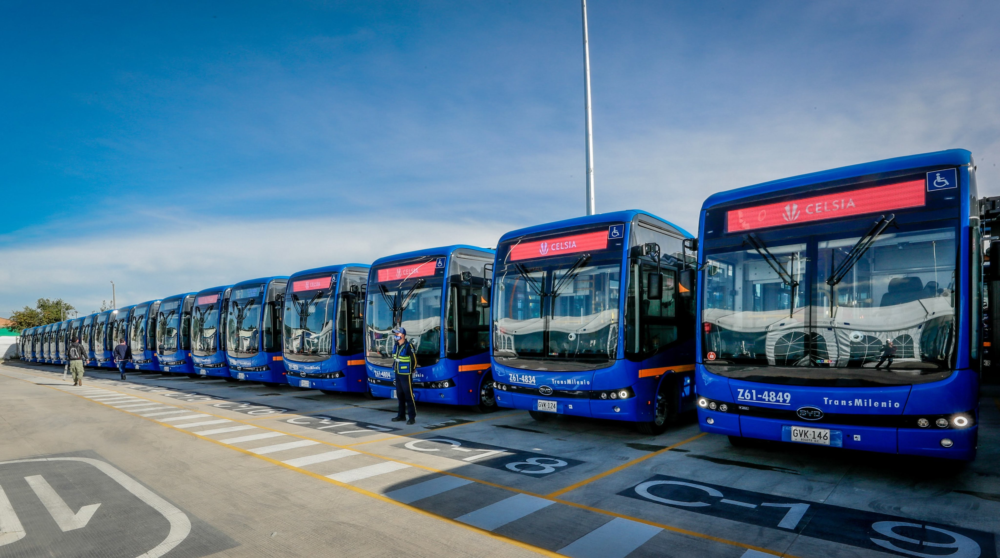

Apa itu Bus Listrik?

Singkatnya, Bus listrik adalah bus yang di tenagai oleh listrik, sehingga lebih ramah lingkungan. Menurut wikipedia : Bus Listrik (bahasa Inggris: Electric Bus) adalah kendaraan bus yang dapat menyimpan energi listriknya pada kendaraan itu sendiri atau dapat disuplai terus menerus dari sumber eksternal. Bus listrik menyimpan tenaga listrik yang dibutuhkan di dalam baterai, atau disuplai terus menerus dari sumber eksternal. Sebagian besar bus yang menyimpan listrik adalah bus listrik baterai (yang sebagian besar akan dibahas dalam artikel ini), di mana motor listrik memperoleh energi dari paket baterai terpasang, meskipun contoh mode penyimpanan lain memang ada, seperti gyrobus yang menggunakan penyimpanan flywheel energy storage. Ketika listrik tidak disimpan, listrik akan disuplai melalui kontak dengan sumber daya luar. Misalnya seperti listrik aliran atas seperti di bus troli, atau dengan konduktor non-kontak di tanah, seperti di kendaraan listrik online. Pada tahun 2019, Tiongkok merupakan 99% pengguna terbesar bus listrik didunia dengan lebih dari 421.000 bus listrik yang beroperasi di jalanan dan menguasai 17% penggunaanya sebagai armada transportasi publik didalam negeri Tiongkok.Sebagai perbandingan, Amerika serikat memiliki 300 bus listrik, dan Eropa memiliki 2.250 bus listrik.
Apa manfaat dan keuntungan Bus Listrik?
Ramah Lingkungan
Bebas dari bising suara mesin
Pengisian bahan bakar lebih praktis
Perawatan mudah dan hemat
Apa Perbedaan Bus Listrik dan Bus Biasa?
VS
1. Kebisingan
Bus listrik lebih senyap daripada bus dengan mesin pembakaran dalam. Ini dapat membantu pengemudi lebih fokus pada jalan dan mendengar apa yang terjadi di kursi belakang.
2. Sumber Tenaga
Bus biasa menggunakan energi listrik yang disimpan dalam baterai sebagai sumber tenaga. Motor listrik pada bus ini digerakkan oleh listrik dari baterai, sehingga tidak memerlukan bahan bakar fosil. Sedangkan bus listrik Menggunakan energi listrik yang disimpan dalam baterai sebagai sumber tenaga. Motor listrik pada bus ini digerakkan oleh listrik dari baterai, sehingga tidak memerlukan bahan bakar fosil.
3. Dampak Lingkungan
Bus biasa menghasilkan emisi gas buang seperti karbon dioksida (CO₂), nitrogen oksida (NOx), dan partikel-partikel lain yang berkontribusi pada polusi udara dan perubahan iklim.Sedangkan bus listrik ramah lingkungan karena tidak menghasilkan emisi gas buang selama beroperasi. Ini membantu mengurangi polusi udara dan gas rumah kaca.